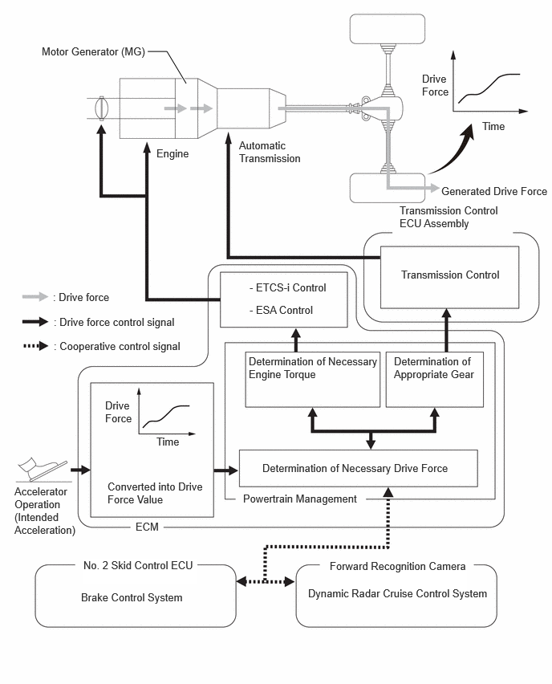
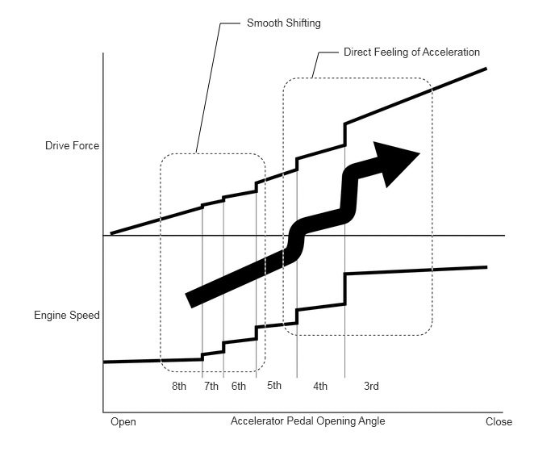
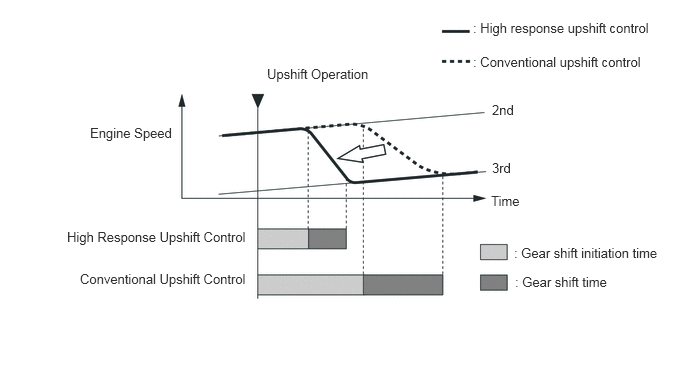
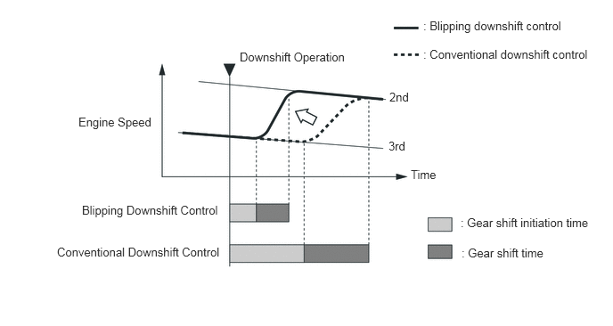
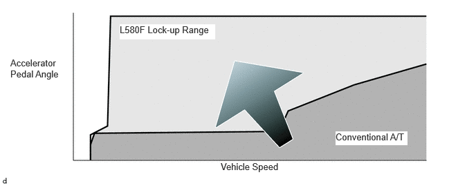
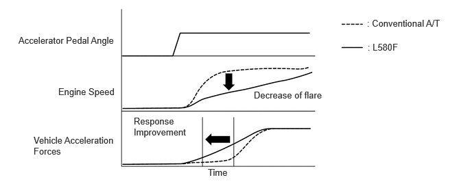
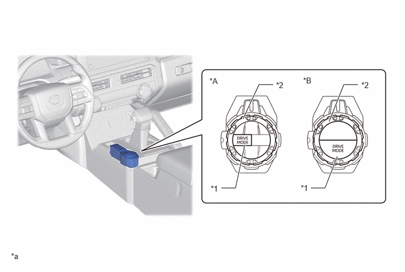
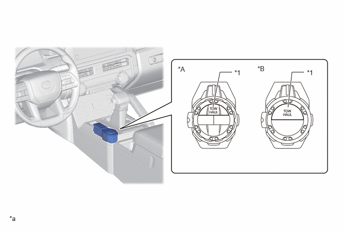
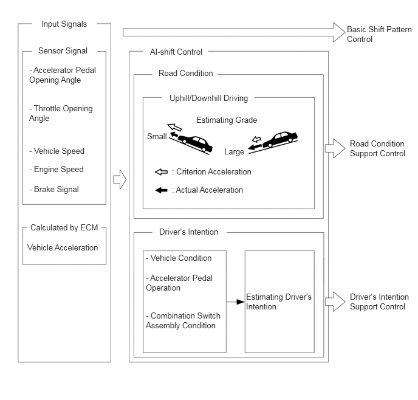
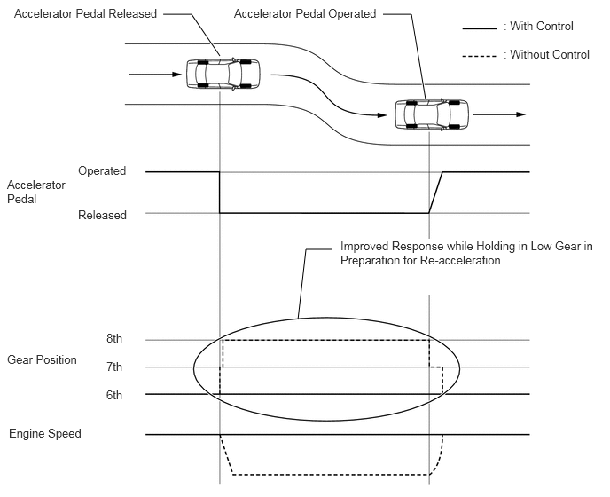

- Detects the vehicle's longitudinal and lateral acceleration.
- Detects the vehicle's yaw rate.
| Last Modified: 10-07-2025 | 6.11:8.1.0 | Doc ID: NM100000002MR7Y |
| Model Year Start: 2024 | Model: Tacoma | Prod Date Range: [03/2024 - ] |
| Title: L580F (HYBRID TRANSMISSION / TRANSAXLE): HYBRID TRANSMISSION SYSTEM: TRANSMISSION CONTROL; 2024 - 2026 MY Tacoma Tacoma HV [03/2024 - ] | ||
TRANSMISSION CONTROL
FUNCTION OF MAIN COMPONENTS
|
Component |
Function |
|
|---|---|---|
| *: Models with DAC/CRAWL and MTS switch | ||
|
Automatic Transmission Assembly |
Solenoid Valve SL1 |
Controls the No. 1 clutch (C1) pressure. |
|
Solenoid Valve SL2 |
Controls the No. 2 clutch (C2) pressure. |
|
|
Solenoid Valve SL3 |
Controls the No. 3 clutch (C3) pressure. |
|
|
Solenoid Valve SL4 |
Controls the No. 4 clutch (C4) pressure. |
|
|
Solenoid Valve SL5 |
Controls the No. 1 brake (B1) pressure. |
|
|
Solenoid Valve SL6 |
Controls the No. 2 brake (B2) pressure. |
|
|
Solenoid Valve SC3 |
Switches the No. 2 B2 apply control valve. |
|
|
Solenoid Valve SLT |
Controls the line pressure. |
|
|
Solenoid Valve SLU |
Controls the lock-up clutch pressure. |
|
|
Solenoid Valve SL |
Switches the lock-up relay valve. |
|
|
Transmission Revolution Sensor (NT) |
Detects the input speed of the transmission. |
|
|
Transmission Revolution Sensor (SP2) |
Detects the output speed of the transmission. |
|
|
No. 1 ATF Temperature Sensor |
Detects the ATF temperature. |
|
|
No. 2 ATF Temperature Sensor |
||
|
Oil Pump with Motor Assembly |
Assist main oil pump and holds the ATF pressure during idle stop. |
|
|
Hybrid Module Assembly |
Motor Generator (MG) |
Driven by electrical power from the HV supply battery assembly, and generates motive force. Also, MG generates electricity to recharge the HV supply battery assembly (regenerative braking) during braking or when the accelerator pedal is not depressed. |
|
Hybrid Module Clutch (K-0) |
The engine and the MG are connected and disconnected based on driving conditions and the State of Charge (SOC). |
|
|
Solenoid Valve SK0 |
Controls the hybrid module clutch (K-0) pressure. |
|
|
Solenoid Valve SCK0 |
Switches the K-0 apply control valve and solenoid modulator valve. |
|
|
Resolver (for MG) |
Detects the rotational speed. |
|
|
Temperature Sensor (for MG) |
Detects the temperature of the MG. |
|
|
Airbag ECU Assembly |
Yawrate Sensor |
|
|
Accelerator Pedal Rod with Sensor Assembly |
Detects the accelerator pedal opening angle. |
|
|
Stop Light Switch Assembly |
Detects the brake pedal depressing signal. |
|
|
Park/Neutral Position Switch Assembly |
Detects the shift lever position (P, R, N, D). |
|
|
Transmission Floor Shift Assembly |
Transmission Control Switch |
|
|
Integration Control and Panel Assembly |
DRIVE MODE Switch |
Switches the driving mode select on and off. |
|
MTS Switch* |
Switches multi-terrain select on and off. |
|
|
TOW HAUL Switch |
Switches tow haul mode select on and off. |
|
|
DAC/CRAWL Switch* |
Switches DAC/CRAWL mode select on and off. |
|
|
Combination Meter Assembly |
MIL |
Illuminates or blinks to inform the driver when the ECM detects a malfunction. |
|
Multi-information Display |
|
|
|
Buzzer |
|
|
|
ECM |
Controls engine output in response to signals from the transmission control ECU assembly. |
|
|
Transmission Control ECU Assembly |
|
|
|
Brake Actuator Assembly
|
Sends information about the operation conditions of the brake control system to the hybrid vehicle control ECU assembly. |
|
|
Forward Recognition Camera |
Sends acceleration and deceleration request signals to the ECM. |
|
SYSTEM CONTROL
- The L580F hybrid vehicle transmission uses the following controls.
|
Control |
Function |
|---|---|
|
Shift Timing Control |
Performs shifting control according to the shift position, vehicle speed, accelerator opening angle and driving conditions. |
|
Driving Response and Acceleration Management System (DRAMS) |
Integrates controls for the engine, transmission and related systems, which form the base for the vehicle's motive force, to improve maneuverability and comfort and achieve a superior driving feel. |
|
S Mode Control |
Uses gear hold control, high response upshift control, blipping downshift control and complete lock-up control to improve the response and feel of manual operations, providing driving pleasure during sporty driving. |
|
Lock-up Timing Control |
|
|
Drive Mode Select |
Makes it possible to select the driving mode by performing switch operations. |
|
Artificial Intelligence-shift Control (AI-shift Control) |
Automatically switches the shift pattern according to road conditions and the driver's intentions. |
|
Line Pressure Control |
Controls the line hydraulic pressure to the optimal pressure based on engine torque information. |
|
Line Pressure Optimal Control |
Uses the shift solenoid valves to precisely control the clutch hydraulic pressure according to the engine output and driving conditions. |
|
Clutch to Clutch Pressure Control |
Uses the shift solenoid valves to directly control the clutch and brake, making it possible to achieve a compact transmission and perform high-precision shifting control. |
|
Differential Protection Control |
Prohibits gear shifting to protect the differential when a large speed difference occurs between the left and right driving wheels (such as when the left and right driving wheels are traveling on surfaces with different friction coefficients). |
(a) Driving Response and Acceleration Management System (DRAMS)
- A system for integrally controlling the motive force, which has been named the Driving Response and Acceleration Management System (DRAMS), is used. This system achieves a more optimal driving feel (including the vehicle behavior) by considering driver requests and the surrounding environment. It integrates controls for the engine, transmission and related systems, which form the base for the vehicle's motive force, to improve maneuverability and comfort.
- The Driving Response and Acceleration Management System (DRAMS), converts accelerator pedal operations into the motive force requested by the driver, judges the engine torque and gear position required to achieve that requested motive force, and integrally controls the engine and transmission. As a result, the motive force desired by the driver is generated, achieving a superior driving feel. In addition, DRAMS integrative control is performed according to the motive force requested by VDIM and the cruise control system, improving the control performance of the systems.
- High speed responsiveness according to the driver's intentions and a superior driving feeling are achieved even during a shift transition, start-off and deceleration. 
(1) Drive Force Control Achieving Fuel Efficiency and Driveability
- Motive force control provides the drive force of each shift position with a certain degree of freedom, achieving the motive force requested by the driver. In ranges where the accelerator pedal is only lightly depressed, the highly efficient range of the engine is proactively used to improve fuel efficiency performance. In addition, the difference in drive force between each gear position is minimized, achieving smooth shifting. On the other hand, in ranges where the accelerator pedal is heavily depressed, the motive force is generated according to changes in the engine speed, achieving a direct feeling of acceleration. As a result, fuel efficiency and driveability are achieved. 
(b) S Mode Control
- S mode control is a control specification designed so that drivers can enjoy sporty driving. It emphasizes the direct feel of accelerator pedal operation and the responsiveness and feel of manual shifting.
- Gear hold control is used to express a direct feeling.
- High response upshift control and blipping downshift control are used to improve the responsiveness and feel of shifting gears.
(1) Gear Hold Control
- The gear position is held to make it possible to make efficient use of the gear position at maximum engine speeds.
- The system may automatically shift during S mode
in the following situations.
Automatic shifting when the shift lever is in S
- When the vehicle speed decreases below a specified speed, a downshift is performed.
- When the ATF or engine coolant temperature is low, gear shifting will be performed automatically.
(2) High Response Upshift Control
- High response upshift control achieves highly responsive shifting. It does this by using the Driving Response and Acceleration Management System (DRAMS), which integrally controls the engine and transmission, and oil pressure control system, which directly controls the clutch pressure. The oil pressure control system performs quick and precise clutch engagement and release control. The Driving Response and Acceleration Management System (DRAMS) optimally controls the electronic throttle opening angle, ignition timing and fuel injection volume to command the engine torque to decrease. These controls are performed simultaneously to more precisely control engine speed changes when shifting, achieving quick shifting. 
(3) Blipping Downshift Control
- Blipping downshift control achieves quick shifting in the same manner as high response upshift control by using the oil pressure control system and Driving Response and Acceleration Management System (DRAMS).
- The oil pressure control system is used to
quickly release the clutch and create a neutral
condition. Furthermore, the Driving Response and
Acceleration Management System (DRAMS) is used to
instantly increase the engine speed for synchronizing
the engine speed near the gear position speed after
shifting. Lastly, the direct oil pressure control
system finishes shifting gears by smoothly and
quickly engaging the clutch on the engagement side.
HINT:
When the ATF and engine coolant temperature is low, blipping downshift control will not be performed.

(c) Lock-up Timing Control
(1) Compared to the previous model, the L580F performs lock-up control at lower speeds as well as at higher opening angles, enabling direct transmission of power similar to a manual transmission. Furthermore, the increased rate of engagement contributes to improved fuel efficiency.
(2) By increasing the lock-up range, and suppressing engine revving, smooth driving with high responsiveness and linearity is realized.
 (3) With previous automatic transmission, lock-up was cancelled when downshifting to avoid shift shock, but with a torque converter adopting a multiple disc lock-up clutch as well as precision control taking into account transient characteristics of engine torque and hydraulic pressure, it has become possible to maintain lock-up continuously.
(4) In 1st gear and the low engine speed regions of 2nd and higher gears, lock-up is not performed, and the torque converter function is employed to realize smooth driving.
|
Gear Position |
Shift Position |
|---|---|
|
D, S |
|
|
○: Operates
X: Does not operate *: Except at low engine speed range |
|
|
1st |
X |
|
2nd |
○*(During acceleration) |
|
3rd |
○* |
|
4th |
○* |
|
5th |
○* |
|
6th |
○* |
|
7th |
○* |
|
8th |
○* |
(d) Drive Mode Select
- This function automatically switches the powertrain control mode between the 3 types selected by drive mode select operations: "NORMAL", "ECO" and "SPORT".*1
- This function automatically switches the
powertrain control mode between the 5 types selected
by drive mode select operations: "NORMAL", "ECO",
"COMFORT","SPORT" and "SPORT+".*2
*1: Models without AVS
*2: Models with AVS
Drive Mode
Powertrain Control Mode
Outline
*: Models with AVS NORMAL
Normal
Ensures fuel economy and driveability when driving in the city, but when driving on winding roads, selects the optimal gear position to provide a more enjoyable driving experience.
ECO
Eco
Gradually adjusts the throttle characteristics to assist the driver with eco driving.
COMFORT*
Normal
Mainly uses the lower damping force range with the Adaptive Variable Suspension System (AVS) compared to NORMAL mode, performing control to achieve a comfortable ride.
SPORT
Power
Performs control suitable for sporty driving by improving the acceleration response by controlling the transmission and engine and also improving the steering feeling.
SPORT+*
Power
Performs control suitable for sporty driving by improving the acceleration response by controlling the transmission and engine, also improving the steering feeling and using the higher damping force range with AVS compared to NORMAL mode.
*A
Models with AVS
*B
Models without AVS
*1
DRIVE MODE Switch
*2
MODE SELECT Switch
*a
The illustrations shown are examples only.
-
-
(e) Tow Haul Mode Select
- When TOW/HAUL is selected, the ECM controls the
engine output, transmission shift schedule, shift
timing and steering map to ensure drivability when a
trailer is towed.
Mode
Outline
TOW/HAUL
When TOW/HAUL is selected, the ECM controls the engine output, transmission shift schedule, shift timing and steering map to ensure drivability when a trailer is towed.
*A
Models with AVS
*B
Models without AVS
*1
TOW HAUL Switch
-
-
*a
The illustrations shown are examples only.
-
-
(f) Artificial Intelligence-shift Control (AI-shift Control)
- AI-shift control, which automatically switches
the shift pattern according to "road conditions" and
the "driver's intentions", is used. AI-shift control
is used in addition to the normal shift pattern,
which takes into consideration the vehicle speed and
the engine throttle opening angle as parameters to
determine the shift position of the automatic
transmission, achieving a higher dimension of
comfortable driving.
HINT:
AI-shift control will be canceled when S mode is selected.

(1) Road Condition Support Control
- Road condition support control judges whether the
vehicle is traveling on an uphill or downhill slope
according to information such as the throttle opening
angle and vehicle speed. On uphill slopes,
unnecessary upshifts are suppressed to constantly
achieve the optimal amount of drive force, and on
downhill slopes, downshifts are automatically
performed to achieve the optimal engine brake force.

(2) Driver's Intention Support Control
- Driver intention support control predicts the driver's intentions according to accelerator pedal operations and the vehicle condition and switches to a comfortable shift pattern that is appropriate for the driver without requiring any switch operations.
- Sudden Accelerator Pedal Release Control
- When the accelerator pedal is released suddenly, this control makes it easier to hold the gear position, improving responsiveness when reaccelerating and the engine brake force. 
(3) Driver Intention/Driving Scene Support Control
- Driver intention/driving scene support control selects the optimal gear position according to the driver's intentions and the driving scene at that point in time.
- When the driver is driving in a relaxed manner, a high gear position is selected to emphasize fuel efficiency.
- When the driver is driving in a sporty manner, a low gear position is selected to emphasize drive force and responsiveness.
- Even if the driver has the D range selected while
sporty driving is performed on winding roads and race
tracks, shifting is performed using a shift pattern
that makes it feel like gear positions are being
selected manually, achieving a high-speed responsive
drive.
HINT:
Driver intention/driving scene support control will be canceled when ECO mode is selected.

FAIL-SAFE
- The fail-safe function minimizes the loss of operability when an abnormality occurs in a sensor or a solenoid valve.
- For details, refer to the Repair Manual.
DIAGNOSIS
- When the ECM detects a malfunction, it makes a diagnosis and memorizes the failed section. Furthermore, the ECM illuminates or blinks the MIL in the combination meter assembly to inform the driver.
- The ECM will also store the Diagnostic Trouble Codes (DTCs) of the malfunctions.
- The DTCs can be read by connecting the GTS to the DLC3.
- For details, refer to the Repair Manual.